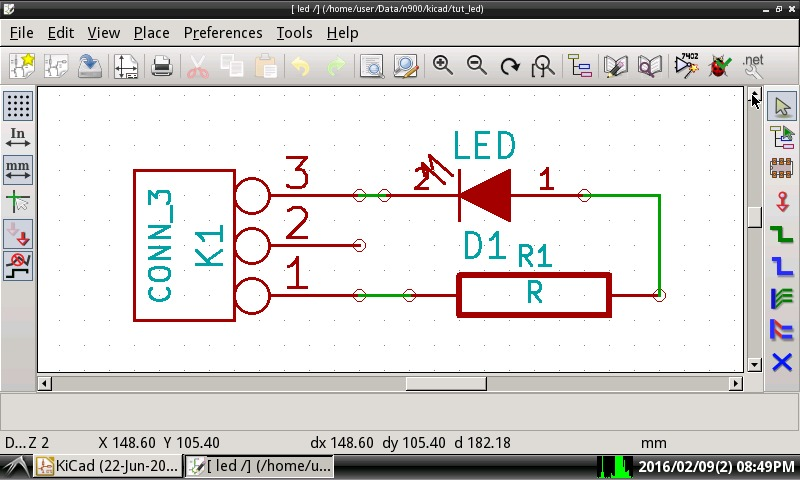
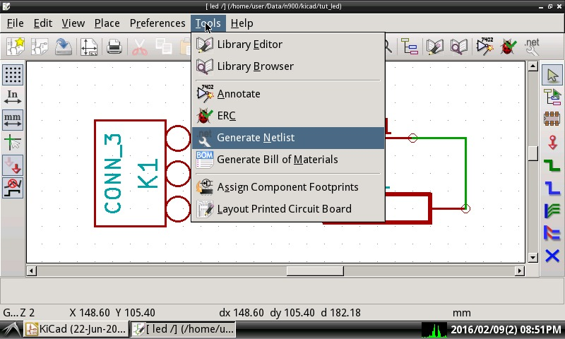
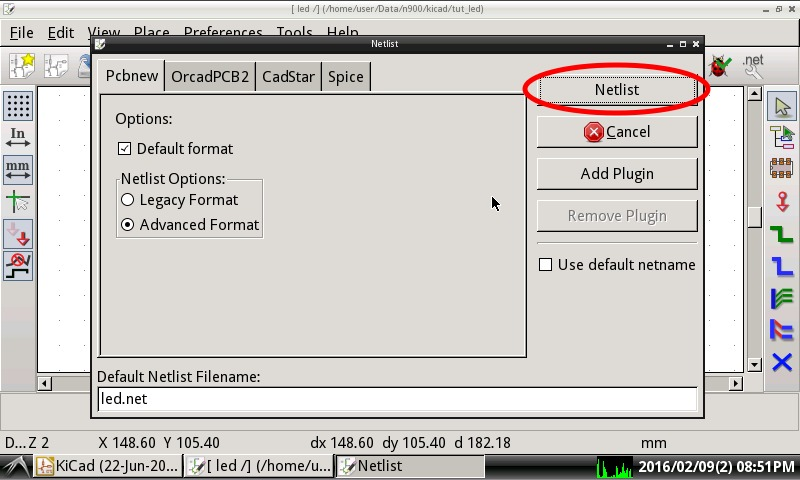

Steward
分享是一種喜悅、更是一種幸福
繪圖相關 - KiCAD - 0.20140622 BZR4027 - LED練習電路 - Netlist
Netlist主要描述元件之間的連線關係，如下所示(led.net)：
(export (version D)
(design
(source /home/user/Data/n900/kicad/tut_led/led.sch)
(date "Tue 09 Feb 2016 08:55:51 PM CST")
(tool "eeschema (22-Jun-2014 BZR 4027)-stable"))
(components
(comp (ref K1)
(value CONN_3)
(libsource (lib conn) (part CONN_3))
(sheetpath (names /) (tstamps /))
(tstamp 56B9CC0C))
(comp (ref R1)
(value R)
(libsource (lib device) (part R))
(sheetpath (names /) (tstamps /))
(tstamp 56B9CDE0))
(comp (ref D1)
(value LED)
(libsource (lib device) (part LED))
(sheetpath (names /) (tstamps /))
(tstamp 56B9CEE4)))
(libparts
(libpart (lib device) (part LED)
(footprints
(fp LED-3MM)
(fp LED-5MM)
(fp LED-10MM)
(fp LED-0603)
(fp LED-0805)
(fp LED-1206)
(fp LEDV))
(fields
(field (name Reference) D)
(field (name Value) LED)
(field (name Footprint) ~)
(field (name Datasheet) ~))
(pins
(pin (num 1) (name A) (type passive))
(pin (num 2) (name K) (type passive))))
(libpart (lib device) (part R)
(description Resistance)
(footprints
(fp R?)
(fp SM0603)
(fp SM0805)
(fp R?-*)
(fp SM1206))
(fields
(field (name Reference) R)
(field (name Value) R)
(field (name Footprint) ~)
(field (name Datasheet) ~))
(pins
(pin (num 1) (name ~) (type passive))
(pin (num 2) (name ~) (type passive))))
(libpart (lib conn) (part CONN_3)
(description "Symbole general de connecteur")
(fields
(field (name Reference) K)
(field (name Value) CONN_3))
(pins
(pin (num 1) (name P1) (type passive))
(pin (num 2) (name PM) (type passive))
(pin (num 3) (name P3) (type passive)))))
(libraries
(library (logical device)
(uri /usr/share/kicad/library/device.lib))
(library (logical conn)
(uri /usr/share/kicad/library/conn.lib)))
(nets
(net (code 1) (name "")
(node (ref K1) (pin 2)))
(net (code 2) (name "")
(node (ref K1) (pin 1))
(node (ref R1) (pin 1)))
(net (code 3) (name "")
(node (ref R1) (pin 2))
(node (ref D1) (pin 1)))
(net (code 4) (name "")
(node (ref K1) (pin 3))
(node (ref D1) (pin 2)))))
從上面的列表可以得知元件之間的連線關係
接著繼續使用LED練習電路

選擇產生Netlist

使用Pcbnew頁面即可
